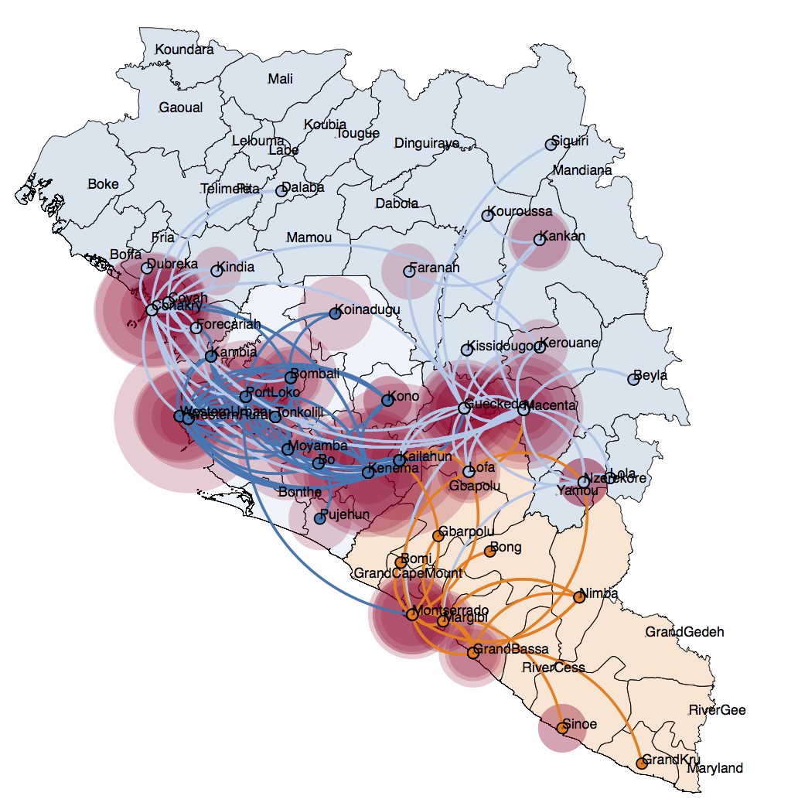
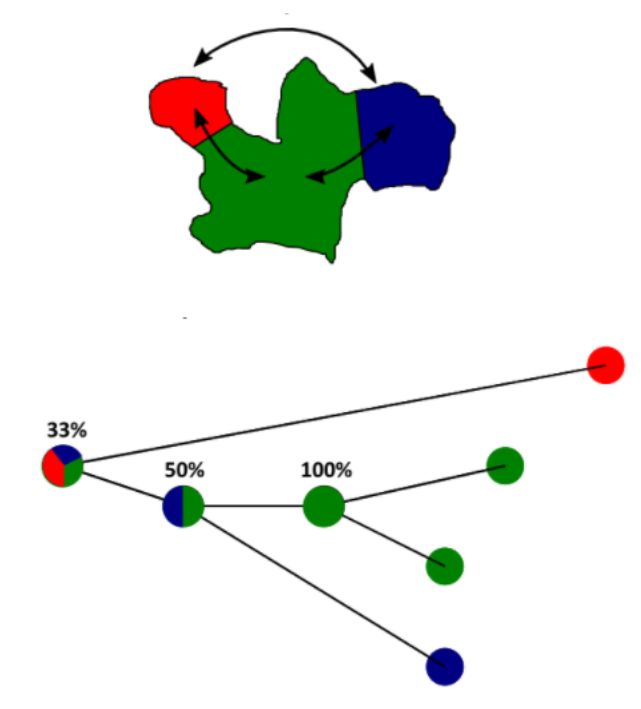
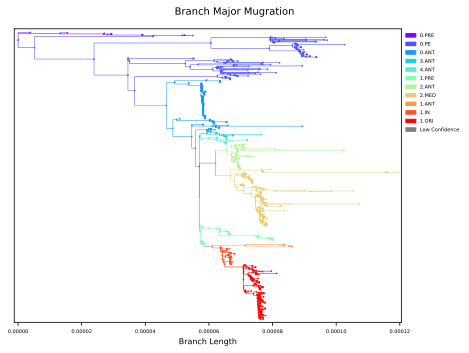
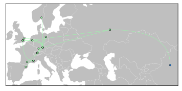

Plague Phylogeography
Novel Synthesis and Geospatial Analysis
5 Feburary 2021
Presentation: https://bit.ly/3rgx5sq ( web , pdf )
Github:
ktmeaton/plague-phylogeography

Table of Contents
The Plague
- A zoonoses of rodents and fleas in wild reservoirs.
- Spillover to mammalian hosts occasionally occurs.
- Humans are the most 'spectacular' victims.1

Research Questions
- Where did plague originate?
- How did pandemics spread across the continent?
- How many pandemics have occurred?
- What evolutionary mechanisms enhance virulence?
Problems: Big Data
- A large genomic dataset was assembled in 20191.
- This dataset was re-used by aDNA researchers.
- But this is only a fraction of the data available2!

Problems: Geospatial
- Spread maps aren't statistically constructed1.
- Leading to ambiguity and uncertainty.

Objectives
- What are all those extra Y. pestis genomes?
- When were they collected?
- Where were they collected?
- Do they add value to geospatial analysis?
Exploratory Analysis
Collection Location
Geocoding using OpenStreeMap and GeoPy.

Collection Date

Comparative Phylogeny
Maximum likelihood tree estimated with IQTREE.

Public Resource
Geospatial Analysis
Spread Maps
 The "Known"
- The Black Death: 14-18th Century Europe
 
The "Unknown"
- The Medievalis Clade.
- Emerges after the medieval "Big Bang".
Upcoming Work
- Confidence Intervals: For date and location.
- Deeper clock model investigation (ie. coalescent)
- Write and think. Create new plots. Rinse and Repeat.